開卷有益 ／
分科測驗 ／ 地理 ／ 114 年114 年分科測驗地理試題與答案
這一頁是民國 114 年分科測驗地理的整份歷屆試題，共 41 題，題目與標準答案出自大考中心 分科測驗歷年試題（依著作權法 §9，考試試題不受著作權保護），其中 41 題附有詳解。以下逐題列出題幹、選項與答案；要計時作答或記錄成績，請用線上練習。
大學入學考試中心原始場次代碼：分科地理
線上作答這一科 →
全部 41 題
第 1 題
世界棒球經典賽將於2026 年3 月舉行分組預賽,某參賽國球迷貼文表示:「希望我國與
日本、韓國分在同組,因為這些國家球員也有漢字的名字,比較容易記住,可以吸引平常
較沒參與棒球活動的朋友一同觀賽;若是與古巴、荷蘭等國同組,因球員名字只有音譯而
較難記住,很多人就沒興趣了。」上述球迷的觀點,最適合以下列哪個概念來解釋?
（A） 文化圈（B） 資訊革新（C） 區位移轉（D） 世界體系答案：（A）
詳解與考點 正解：貼文把日本與韓國球員的漢字姓名視為容易辨識、能拉近觀賽者距離的共同文化線索，判準在不同國家之間存在相近的文字與文化經驗。這種由共享文化特徵形成的區域認同，最適合用文化圈說明，故選 A。
B：資訊革新著重資訊科技如何改變傳遞、溝通與生產方式；題幹的重點不是使用新科技，而是名字所反映的文化親近感。
C：區位移轉是產業、人口或活動因成本與條件變化而改變所在地，和球迷對漢字姓名的熟悉程度無關。
D：世界體系分析核心區、半邊陲區與邊陲區之間的經濟權力與分工，不能直接解釋此處的文字文化認同。
本題考點：文化圈（cultural realm）——材料若以共同文字、宗教、語言或生活習俗連結多地，優先判為文化圈；區域概念的判別（regional concepts）——先辨認題幹是在談文化相似、科技變遷、區位移動或經濟權力，再選相應概念。
第 2 題
照片1 是2023 年臺灣某河口的空拍照片。照片中可看到河流右岸有許多正在興建的建築物,
周圍部分地區為山林河海的自然環境。此地區位於
大都市邊緣,土地開發潛力高,但對居民來說,
聯外交通是其最關心的議題。根據照片1 中的資訊,
下列何者是此地在該都市發展過程中最主要扮演
的角色?
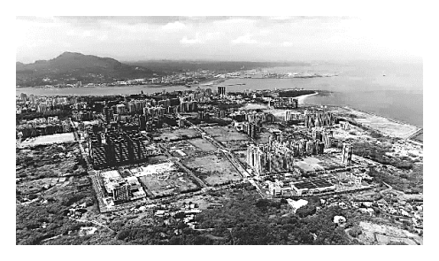
（A） 提供都市休閒的農林專區（B） 增加都市之肺的公園專區 照片1（C） 作為河港都市的倉儲用地（D） 疏解都市人口的新興市鎮答案：（D）
詳解與考點 正解：題幹同時指出大都市邊緣、河口周邊仍有自然環境、正在興建大量建築，以及居民最關心聯外交通；這組線索指向都市外圍承接人口與住宅開發的新興市鎮，而非維持原有農林或港埠功能。此地最主要扮演疏解都市人口的角色，故選 D。
A：農林休閒專區的土地利用重點是保留農業、林地與遊憩，不能解釋大量住宅或建築開發與交通需求。
B：都市之肺的公園專區以開放綠地與生態保育為核心，與題幹描述的外圍居住開發不合。
C：河港倉儲用地應可見碼頭、貨運與物流設施等港埠機能；題幹的核心線索反而是人口與居住開發。
本題考點：都市邊緣擴張（urban fringe expansion）——同時出現新建住宅、土地開發潛力與交通需求時，優先判為都市外溢；新興市鎮（new town）——以承接都會人口與住宅機能為主，常伴隨聯外交通建設需求；地景判讀（landscape interpretation）——將照片中的土地利用線索與題幹功能描述交叉判斷，不只看單一河口地形。
第 3 題
河狸是一種半水生的囓齒動物,會利用樹枝、泥土和石頭等材料,在河流中建造水壩,
為自己創造理想的棲息地,有「自然界水壩工程
師」之稱,這些水壩有些可能長達數百公尺。照片2
為河狸在某河流所興建的水壩。該水壩未被洪水
沖毀的期間,其對於該河流最可能產生下列哪些影響?
甲、減少水壩上游入滲量
乙、降低水壩下游洪峰流量
丙、減少水壩上游地表逕流量
照片2
丁、減少水壩下游河流輸沙量
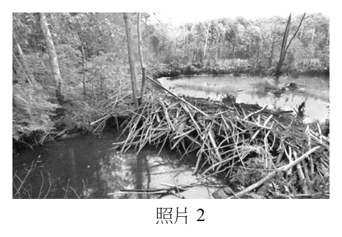
（A） 甲乙（B） 甲丙（C） 乙丁（D） 丙丁答案：（C）
詳解與考點 正解：河狸壩會在上游形成蓄水區，延緩洪水下洩，並使部分泥砂在壩前沉積。（乙）蓄水與延時排放可降低下游洪峰流量；（丁）泥砂被攔留在壩前，會減少下游河流輸沙量。故選 C。
A：此組合含有（甲）。（甲）不成立，壩前水位上升與蓄水時間拉長，通常增加水與河床、土壤接觸的機會，不能推論上游入滲量減少。
B：此組合含有（甲）與（丙）。（丙）把壩上游來水視為少了地表逕流並不妥；水壩改變蓄水與流速，不能讓上游集水區產生的逕流來源消失。
D：此組合含有（丙）。分辨關鍵在河狸壩能暫存並改變水流，但不會直接消除上游降雨形成的逕流。
本題考點：洪峰調節（flood-peak attenuation）——蓄水空間增加時，洪水較晚且較緩地傳至下游；河川輸砂（sediment transport）——壩體降低流速並攔留泥砂時，下游輸砂量減少；入滲（infiltration）——水在地表停留較久通常有較多下滲機會。
第 4 題
某生出國旅遊,發現當地物價跟臺灣大異
其趣,例如1 公升的礦泉水要價約合臺幣
15 元,而1 公升的汽油只要臺幣4 元。另外
丙
逛當地市集時,發現當地無論男女都穿戴
長袍頭巾,市集販賣的地毯、壁毯,或是
乙 甲
繪畫等藝術品都是色彩繽紛、圖案對稱的
幾何圖形。某生最可能是去到圖1 中的哪個
國家? 丁
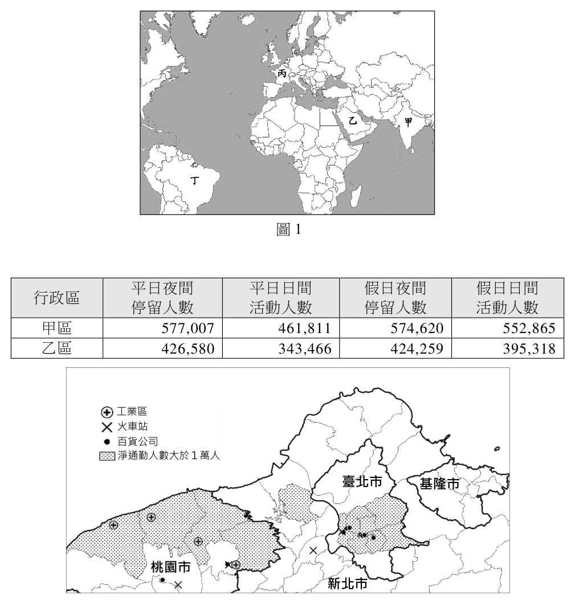
（A） 甲（B） 乙
圖1（C） 丙（D） 丁答案：（B）
詳解與考點 正解：極低汽油價格與長袍頭巾、對稱幾何圖案與地毯工藝共同指向伊斯蘭文化圈中的伊朗。將能源價格與波斯地毯文化合看，圖中的伊朗標為乙，故選 B。
A：甲不是同時具備低汽油價格、伊斯蘭幾何工藝與波斯地毯傳統的伊朗。低油價只能縮小範圍，不能單獨鎖定國家。
C：丙與題幹的人文景觀組合不符。宗教服飾與藝術樣式是用來辨識文化地域，不能泛指所有產油國。
D：丁亦非題幹所指的伊朗。定位時須把油價、服飾與工藝傳統三項線索交叉比對。
本題考點：文化景觀（cultural landscape）——服飾、工藝與宗教規範可作為文化區辨識線索；石油經濟（petroleum economy）——產油與能源政策可使國內燃油價格偏低；區域綜合判讀（regional synthesis）——自然資源與人文景觀需同時符合，才能定位國家。
第 5 題
某研究指出:「阿美族主要分布在臺灣東部,因居住環境不同而發展出相異的飲食特色
(甲)。東海岸的阿美族有著高超的潛水射魚技術,因而有海鮮水產飲食文化;縱谷區的
阿美族多上山狩獵,出發前並有特定的儀式(乙),因而有食肉的飲食文化。上述兩種
主要都是男性的工作,而阿美族女性則是以採摘野菜為主(丙),發展出野菜的飲食文化,
她們會隨著季節時令及地域不同,有什麼便採集什麼,採摘剛好的量,避免整株拔起,
只取嫩葉食用(丁)。」題文中畫線代號部分,何者最能直接說明阿美族的傳統生態知識?
（A） 甲（B） 乙（C） 丙（D） 丁答案：（D）
詳解與考點 正解：最直接的線索是女性隨季節和地域採集、只採剛好的量、不整株拔起且取嫩葉；這些做法包含資源生長周期與永續採收的經驗，正是傳統生態知識，故選 D。
A：居住環境不同而形成不同飲食特色，說明的是環境與文化的關聯，尚未呈現如何辨識或維護資源。
B：狩獵出發前的儀式屬文化實踐，題文沒有說明該儀式如何指引生物資源的利用。
C：女性以採摘野菜為主，描述的是性別分工；傳統生態知識的關鍵在採摘的季節、部位與數量，而不只是哪一群人從事採集。
本題考點：傳統生態知識（traditional ecological knowledge）——看到依季節、物種生長狀態與採收量調整行為時，可判為累積的環境知識；永續利用（sustainable use）——判斷採集是否兼顧再生時，要看是否保留植株與避免過量；文化生態（cultural ecology）——飲食、分工與儀式都可反映人地互動，但須分辨是否直接涉及資源管理。
第 6 題
某生為學習理財規劃,欲由各國人口特質尋找較佳的投資標的。該生蒐集2020 年全球一些
國家的人口資料並繪製成圖2,其中橫軸是人口成長率,縱軸為14 歲以下人口比例減去
65 歲以上人口比例,圓圈大小代表國家的人口 (%)
25 甲 總數。該生選擇甲國作為投資標的,但指導
20 印度
老師根據圖2 資訊,認為現階段這不是一個好的 15
選擇。下列何者最可能是指導老師的見解? 10
5 中
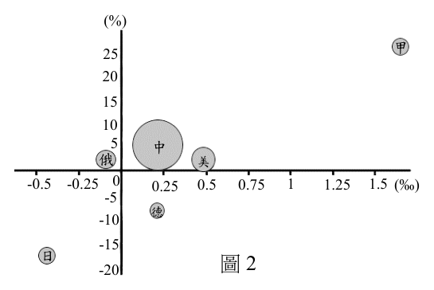
（A） 幼年人口眾多,青壯年負擔大 俄 美
-0.5 -0.25 0 0.25 0.5 0.75 1 1.25 1.5 (‰)（B） 老年人口多,高齡化問題嚴重 -5
德
-10（C） 人口成長率低,內需市場不足 -15
日
-20 圖2（D） 青壯人口比例低,勞動力不足答案：（A）
詳解與考點 正解：縱軸是14歲以下人口比例減65歲以上人口比例，甲國的數值很高，表示幼年人口遠多於老年人口；幼年扶養人口多會加重青壯年負擔，故選 A。
B：甲國的幼年人口明顯多於老年人口，圖形不支持老年人口多、高齡化嚴重的判斷。
C：甲國的人口成長率位於正值且偏高的一側，與「人口成長率低」相反。
D：圖表直接呈現的是幼年與老年人口的差額，不能據此判成青壯人口比例低；本題較直接的投資限制是幼年扶養負擔。
本題考點：人口扶養比（dependency ratio）——幼年與老年人口相對多時，青壯年扶養負擔提高；人口成長率（population growth rate）——正值且較高通常代表人口仍在擴張；人口年齡結構（population age structure）——判讀時要分清幼年多與老年多造成的不同負擔。
第 7 題
1944 年的美軍地形圖中雲林縣外海有多處濱外沙洲,但近年來呈現縮小或消失的趨勢,
例如外傘頂洲逐年縮小,並持續往嘉義縣的海岸線靠近,故被稱為「移動的國土」。
若以方位角表示此移動方向,最可能為下列何者?
（A） 45度（B） 135度（C） 270度（D） 315度答案：（B）
詳解與考點 正解：方位角由正北起順時針量。雲林外海的外傘頂洲向嘉義海岸靠近，方向為東南方；東南的方位角是 90°+45°=135°，故選 B。
A：45° 是東北方，與向較南方的嘉義海岸靠近不符。
C：270° 是正西方，表示向外海西側移動，沒有反映題幹所述的南向位移。
D：315° 是西北方，方向與嘉義相對於雲林外海的位置相反。
本題考點：方位角（azimuth）——以北為 0°或 360°，順時針依序判讀東為 90°、南為 180°、西為 270°；相對方位——先用地名判斷兩地的東西與南北關係，再換成方位角；海岸地形變遷——沙洲位置改變時，要以相對海岸線的移動方向判讀，不能只看其縮小或消失。
某人預計到臺東看2026 年元旦的第一道曙光,他想從圖3 的二萬五千分之一經建版 地形圖中找尋合適的地點。請問:
丁
丙
乙
甲
N
圖3
第 9 題
圖3 中相鄰兩條等高線間的高度差為何?
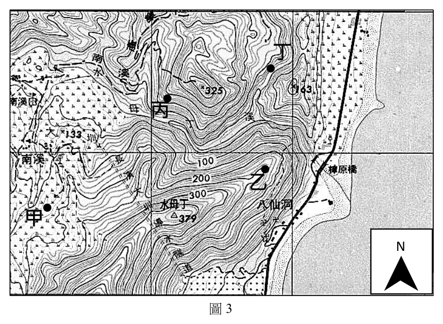
（A） 10 m（B） 20 m（C） 50 m（D） 100 m答案：（A）
詳解與考點 正解：等高線間距是相鄰兩條等高線所代表的高程差。依圖3標示的高度與中間等高線數目計算，每相鄰一條的高差為10m，故選 A。
B：20m是把相鄰兩條等高線的間距放大一倍。計算時應以兩條連續等高線為一個間距。
C：50m通常來自把數個等高線間距合併，卻誤當成單一相鄰間距。
D：100m是更大的標高差，不能省略其間的多條等高線而直接當成相鄰兩線的差值。
本題考點：等高線間距（contour interval）——用相鄰等高線的高程差表示，整張同一地形圖通常固定；地形圖判讀（topographic-map reading）——遇到標高較大的兩線時，要先數出其間有幾個間距；比例尺與高程（scale and elevation）——比例尺描述水平距離，等高線間距描述垂直高差，兩者不可混用。
第 10 題
該生在圖3 中的哪個地點可能最先見到元旦的第一道曙光?
（A） 甲（B） 乙（C） 丙（D） 丁答案：（B）
詳解與考點 正解：判斷最先見到日出要同時看太陽升起的東方方位與地形造成的視線遮蔽，不能只比較平面位置或海拔。圖中的乙點具有較開闊的東向視域，朝日出方向的地平線不易先被地形遮住，因此可最早見到元旦曙光，故選 B。
A、C、D：三點都不及乙點符合東方視域開闊的條件。這題的誘答在於單看誰較偏東、較靠海或海拔較高；實際觀測先後取決於日出方位上的遮蔽角，而非任一單一位置條件。
本題考點：地形圖判讀（topographic-map interpretation）——利用方位與等高線推估觀測方向是否會被稜線遮蔽；日出方位與視域（sunrise direction and viewshed）——比較日出方向的地平線高度，較低且開闊者先看到太陽。
2023 年4 月,位於堪察加半島的舍維留奇火山爆發。當地緊急應變小組立即發布航空 紅色警報,指出有「大片火山灰雲」可能噴至十幾公里高,並且隨風飄移,可能影響鄰近 空域的飛航安全,圖4 為火山噴發前後的兩張衛星影像比較圖。請問: 56°N 55°N 54°N 56°N 55°N 54°N
166°E 166°E
163°E 163°E
160°E 舍維留奇火山 舍維留奇火山 160°E
圖4
114年分科 第 4 頁 請記得在答題卷簽名欄位以正楷簽全名
地理考科 共 11 頁
第 11 題
根據圖4 中大片火山灰雲的位置,火山噴發時最主要吹下列何種風向的風?
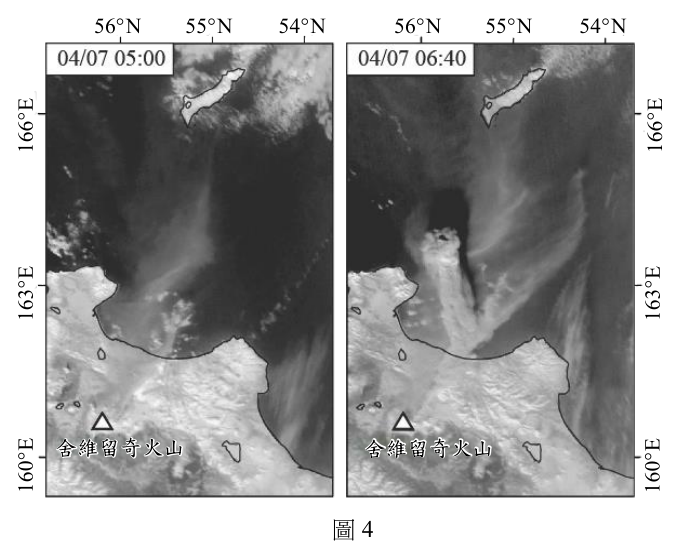
（A） 東風（B） 西風（C） 南風（D） 北風答案：（B）
詳解與考點 正解：火山灰雲會由火山所在位置隨風向下風處飄移。圖中灰雲位於火山以東，表示氣流是由西往東吹；風向名稱依風從何方吹來命名，所以是西風，故選 B。
A：東風是由東往西吹，會把火山灰帶往火山西側，與灰雲的位置相反。
C：南風是由南往北吹，主要造成南北向位移，不能解釋灰雲位於東側。
D：北風是由北往南吹，同樣不會使灰雲主要向東飄移。
本題考點：風向命名（wind-direction convention）——「西風」表示風由西方吹來、向東方移動；衛星影像判讀（satellite-image interpretation）——以噴發源與羽流相對位置判定下風方向，而不是把雲的移動方向誤當作風向名稱。
第 12 題
下列哪兩地之間的大圓航線,最可能受到這次航空紅色警報的影響?
（A） 中國北京到新加坡（B） 臺灣桃園到英國倫敦（C） 澳洲雪梨到日本東京（D） 韓國首爾到美國阿拉斯加答案：（D）
詳解與考點 正解：航空紅色警報的影響範圍在堪察加半島附近及其下風空域，須比較的是兩地間的大圓航線，而非平面地圖上畫出的直線。首爾至阿拉斯加的最短大圓路徑會跨越北太平洋高緯度並接近堪察加周邊，因此最可能受火山灰雲影響，故選 D。
A：北京至新加坡的航線主要位於東亞至東南亞的較低緯度空域，距離堪察加火山灰區甚遠。
B：桃園至倫敦雖向西北延伸，但大圓路徑偏向歐亞大陸內部，不以堪察加附近為主要通過區。
C：雪梨至東京主要經過西太平洋中低緯度，與堪察加所在的北太平洋高緯度空域錯開。
本題考點：大圓航線（great-circle route）——球面上兩地最短路徑常與平面地圖直線不同，需先判斷其高低緯度彎曲方向；火山灰航空危害（volcanic-ash aviation hazard）——航線是否受影響取決於是否穿越噴發源及下風羽流所在空域。
紫斑蝶是全球唯二的越冬型蝴蝶,約在3 月至4 月回溫時,會隨著南風北上繁殖覓食, 稱為「初春北返」;秋季時,會遷徙至南臺灣山谷避冬,稱為「南遷渡冬」。高公局為保護 飛越國道的紫斑蝶安全,每年會在國道三號特定路段,架設長約1,100 公尺、高4 公尺的 防護網,如圖5 中甲點所示。
某生為提升大眾對紫斑蝶的認識,開發一款手機應用程式,使用者安裝後,只要接近 紫斑蝶發現地,就會自動顯示該處紫斑蝶的相關資訊。請問:
國道三號
紫斑蝶發現地
甲
圖5
第 13 題
在全球暖化情境下,紫斑蝶北返和南遷的日期,長期來看,最可能發生何種變化?
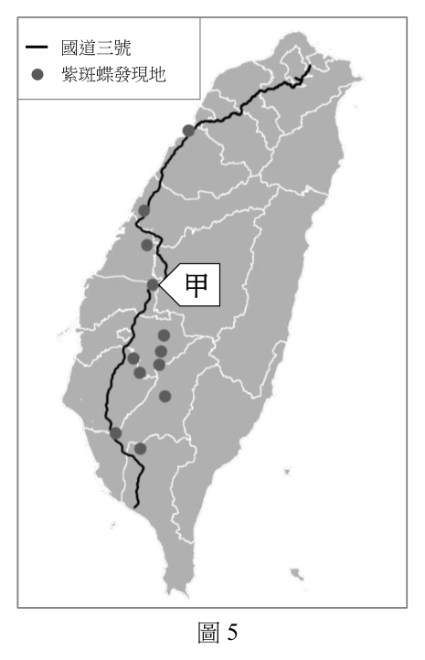
（A） 兩者都提前（B） 兩者都延後（C） 北返提前,南遷延後（D） 北返延後,南遷提前答案：（C）
詳解與考點 正解：題文指出紫斑蝶在 3 月至 4 月回溫時北返，秋季才南遷避冬；全球暖化會使春季適合活動與繁殖的溫度較早出現，也使秋季降溫門檻較晚到來。因此北返較可能提前、南遷較可能延後，故選 C。
A：兩者都提前忽略了南遷受秋季轉冷觸發。暖化使適合留在北方活動的時間拉長，南遷不應同時提前。
B：兩者都延後與春季提早回溫的訊號相反；初春北返的觸發條件會較早達成。
D：北返延後、南遷提前會縮短全年適合活動期，與氣候變暖所造成的季節時序改變方向不符。
本題考點：物候（phenology）——生物季節性事件若受溫度觸發，先比較門檻在春、秋何時達到；全球暖化與遷徙（global warming and migration）——春季暖化常使春季活動提前，秋季暖化常使避寒遷徙延後。
第 14 題
圖5 中的甲點最接近下列哪個地形區?
（A） 林口台地（B） 竹東丘陵（C） 八卦台地（D） 埔里盆地答案：（C）
詳解與考點 正解：題幹的國道三號紫斑蝶防護網位置，配合圖中道路與紫斑蝶發現地的分布，可定位在臺灣中部、最接近八卦台地的地形區，因此甲點對應選項 C，故選 C。
A：林口台地位於北臺灣，與圖示的中部國道三號紫斑蝶保護路段不符。
B：竹東丘陵位於新竹內陸，和甲點所對應的中部位置不同。
D：埔里盆地是中央山脈西側的內陸盆地，並非圖示國道三號防護網最接近的地形區。
本題考點：地形區定位（landform-region identification）——先以道路、聚落或生物分布等地標縮小位置，再比對地形區；臺灣主要地形區——台地、丘陵與盆地名稱必須連同所在區域一起記憶，避免只憑名稱相似作答。
第 15 題
根據題文,該手機應用程式的設計原理,最符合下列何種空間資訊科技的應用?
（A） 對抗性地圖（B） 空間隱私權（C） 適地性服務（D） 公眾參與式地理資訊系統
請記得在答題卷簽名欄位以正楷簽全名共 11 頁 地理考科答案：（C）
詳解與考點 正解：應用程式在使用者接近紫斑蝶發現地時，自動依目前位置顯示該地資訊；關鍵是以即時位置把服務內容推送到所在位置，正是適地性服務的運作方式，故選 C。
A：對抗性地圖著重以地圖揭露或挑戰既有權力關係，題幹沒有地圖論述或反制權力的設計。
B：空間隱私權討論位置資料如何被蒐集、使用與保護；自動顯示在地資訊本身不是隱私保護措施。
D：公眾參與式地理資訊系統強調民眾共同提供、討論或決策空間資訊。此處使用者只是接收系統依位置提供的內容，沒有參與產製資料。
本題考點：適地性服務（location-based service）——出現「接近某地」「依目前位置自動顯示」時，以位置觸發服務判斷；公眾參與式地理資訊系統（public participation GIS）——必須有公眾對空間資料或決策的實質參與，不能只因使用地圖就套用。
澎湖赤崁聚落的居民,每年冬天都會至聚落外海的姑婆嶼採集紫菜。由於姑婆嶼被 列為我國目前唯一的紫菜保護區,為確保紫菜不致被過度採集,赤崁聚落居民的信仰中心 -龍德宮,依聚落住戶人口發放限額採集證,並挑選良辰吉日,統一載運民眾登島, 依慣例燃放鞭炮後民眾才能採集,且採集紫菜時僅能以徒手方式進行。由於紫菜品質 良好市場反應非常熱絡,價格居高不下,被赤崁居民視為年終獎金來源。請問:
第 16 題
根據題文,澎湖赤崁聚落的哪些做法,符合海洋資源永續發展的概念?
甲、依聚落住戶人口發放限額採集證 乙、依慣例燃放鞭炮後民眾才能採集
丙、採集紫菜時僅能以徒手方式進行 丁、紫菜品質良好市場反應非常熱絡
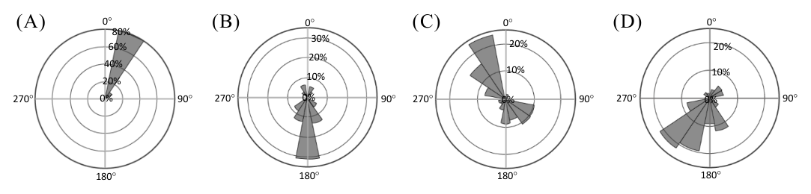
（A） 甲丙（B） 甲丁（C） 乙丙（D） 乙丁答案：（A）
詳解與考點 正解：永續採集的判準是直接限制採集總量與降低對資源的破壞。（甲）按住戶人口發放限額採集證，能控制可採集的人數與數量；（丙）限定徒手採集，能避免器具大規模刮取或破壞棲地。兩者都是保護區避免過度採集的管理措施，組合為甲丙，故選 A。
B：此組合中的（丁）「市場反應熱絡、價格居高」是資源的經濟價值，反而可能提高採集壓力，並非永續管理做法。
C：此組合含（乙）燃放鞭炮的慣例。它可屬聚落儀式，卻沒有直接限制採集量或降低採集衝擊，不能作為海洋資源永續的依據。
D：此組合同時包含（乙）與（丁），一項是儀式行為、一項是市場現象，均不具直接保育效果。
本題考點：資源永續利用（sustainable resource use）——從材料找出能限制總量、期間、方式或破壞程度的具體措施；採集管制（harvest regulation）——配額與低衝擊採集同時出現時，分別判作數量管制與方法管制。
2025 年法國某企業為了環境永續發展,成立無動力的遠洋貨運帆船船隊,僅依靠風力 與洋流航行,船上所有電子系統、
空調與冷藏設備,均依靠太陽能
或風電運作,進行橫跨大西洋
兩岸的有機食品貿易。圖6 顯示
此船隊的航行路線,主要從法國
出發,前往加勒比海地區載運可可
和咖啡,接著抵達美國販售法國
紅酒後,再一路返回法國。請問:
圖6
第 18 題
根據題文,該帆船船隊從法國出發,在順風順水的前提下,最可能依序航經哪些洋流後
返回法國?
甲、墨西哥灣流 乙、北赤道洋流 丙、北大西洋暖流
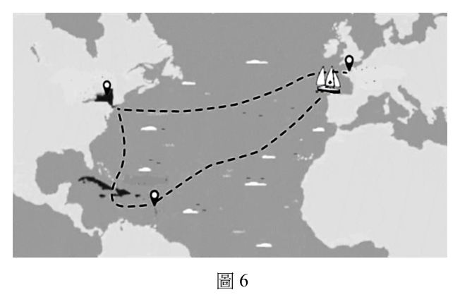
（A） 甲乙丙（B） 乙甲丙（C） 丙甲乙（D） 丙乙甲答案：（B）
詳解與考點 正解：航程由法國先往加勒比海，再到美國，最後返回法國。橫渡大西洋向西時可隨北赤道洋流，抵達加勒比海後接上墨西哥灣流向北、東北方向前進，離開北美後再隨北大西洋暖流向歐洲。因此依序為乙、甲、丙，故選 B。
A：甲墨西哥灣流位於北美東岸及其外海，較適合加勒比海或美國後的航段，不能作為從法國先往加勒比海的第一段。
C：丙北大西洋暖流主要把海水由北美外海帶向西北歐，屬返航末段，不會先出現在自法國西行的起始航段。
D：將北大西洋暖流排在第一段、墨西哥灣流排在最後一段，兩者方向均與題述去程及返歐路徑不合。
本題考點：北大西洋洋流環流（North Atlantic circulation）——先依出發地與目的地判斷航向，再串連流向一致的洋流；北赤道洋流（North Equatorial Current）——跨大西洋往西時，優先辨認其由東向西的流向；洋流與航運（ocean currents and navigation）——題目限定順風順水時，選擇與航線同向而非僅位置相近的洋流。
第 19 題
該企業的作法,最可能達成下列何種效益?
（A） 減少產品的碳足跡（B） 減少產品的食物里程（C） 增加法國糧食自給率（D） 增加法國環境負載力答案：（A）
詳解與考點 正解：企業以無動力帆船航行，並以太陽能或風電供應船上設備，直接減少運輸過程使用化石燃料所排放的溫室氣體。題幹所呈現的是每項產品在生命歷程中造成的排放下降，也就是碳足跡減少，故選 A。
B：食物里程指食物從產地到消費地的運輸距離。題述仍是橫跨大西洋貿易，沒有縮短法國、加勒比海與美國之間的距離；分辨關鍵在排放量不是里程長短。
C：進口可可、咖啡與出口紅酒都是跨國交易，不能增加法國以本國生產滿足食物需求的糧食自給率。
D：環境負載力是環境可支持的人口與活動上限。改用低碳能源可減輕壓力，卻不等於直接提高環境負載力。
本題考點：碳足跡（carbon footprint）——判斷產品運輸方式時，先看能源來源與溫室氣體排放；食物里程（food miles）——只比較產地與消費地的運輸距離，不能以低碳運輸直接替代。
人工智慧(AI)產業供應鏈,包括上游產業的晶片設計公司與代工廠、中游產業的 伺服器品牌廠與代工廠,以及下游產業的軟體服務之雲端業者、AI 公司等,透過上、中、 下游產業的網絡連結,促成使用者得以享受AI 的便利。表1 為2024 年AI 供應鏈上、中、 下游產業部分代表性公司,這些公司分布於世界各地,其企業總部多位於臺灣、美國和 韓國等先進國家。請問:
表1
AI 供應鏈 上游產業 中游產業 下游產業
輝達、超微、英特爾、 HP、戴爾、廣達、 亞馬遜、微軟、
公司名稱
台積電、三星 鴻海、緯穎 Meta、OpenAI
第 20 題
AI 產業的蓬勃發展,依賴某些發展歷程所產生的結果,其最可能是下列何者?
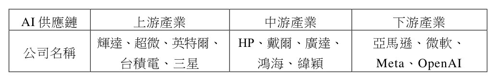
（A） 區域互賴與不平等交換的結果（B） 核心區與邊陲區連動發展的結果（C） 交通革新與全球高度都市化的結果（D） 資訊革命與知識經濟持續精進的結果答案：（D）
詳解與考點 正解：材料列出晶片設計與代工、伺服器、雲端軟體服務及 AI 公司，這套分工建立在半導體、網路、運算與資料處理能力持續進步之上。題目問的是促成 AI 產業的發展歷程，其核心是資訊革命累積的技術基礎與知識經濟的持續精進，故選 D。
A：區域互賴與不平等交換可描述某些全球貿易關係，但不足以指出 AI 運算、雲端服務與知識密集產業為何能興起。
B：核心區與邊陲區的連動是世界體系的分析架構；材料強調的是供應鏈中的科技與知識密集分工，不是以邊陲資源供應為主的關係。
C：交通革新與都市化有助商品與人口流動，卻不是使 AI 產業得以形成的直接技術條件；最強的線索在晶片、伺服器與雲端服務。
本題考點：資訊革命（information revolution）——材料若以數位網路、運算或資料處理為產業前提，從資訊革命判斷其發展背景；知識經濟（knowledge economy）——高科技產業以研發、專業知識與創新作為核心投入時，連結知識經濟。
第 21 題
若僅從表1 判斷,AI 產業供應鏈中各家公司的合作關係,最可能反映出下列哪項產業經營
特徵?
甲、輝達公司已達到垂直整合的成果
乙、廣達和鴻海公司可產生水平分工的合作
丙、緯穎和OpenAI公司可產生垂直分工的合作
丁、台積電和亞馬遜公司可達到水平整合的成果
（A） 甲乙（B） 甲丁（C） 乙丙（D） 丙丁答案：（C）
詳解與考點 正解：表1的關鍵是公司所處供應鏈位置，而不是公司規模。垂直分工發生在不同產業環節，水平分工則是同一環節的企業各自承擔部分工作。（乙）廣達與鴻海同屬中游伺服器代工體系，可形成水平分工；（丙）緯穎在中游、OpenAI在下游AI服務，屬不同環節，可形成垂直分工。故選 C。
A：此組合含有（甲）。輝達主要是上游晶片設計公司，未因位居供應鏈一端就完成跨上、中、下游的垂直整合。
B：此組合同時含有（甲）與（丁）。（丁）台積電在上游、亞馬遜在下游，兩者若合作是跨環節連結，不能稱為水平整合。
D：此組合含有（丁）。分辨關鍵在合作雙方是否位於同一產業環節；上游晶圓代工與下游雲端服務並不相同。
本題考點：產業供應鏈（industrial supply chain）——先依產品或服務流程判定企業位於上、中、下游；水平分工（horizontal division of labor）——同一環節的企業分擔不同工作時適用；垂直分工（vertical division of labor）——不同環節的企業相互連結時適用。
一地的產業發展深受地理環境影響,圖7 是全球五個地點的位置。請問: 戊
丙
乙
甲
丁
圖7
第 22 題
某地是世界重要的肉品出口區,2019-2020 年間因極端高溫與乾旱,造成該地牛羊飼養
成本上升,對國際肉品市場產生重大影響。該地最可能是圖7 中的何處?
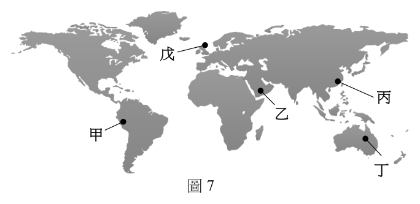
（A） 甲（B） 乙（C） 丙（D） 丁答案：（D）
詳解與考點 正解：題幹把「重要肉品出口區」、「牛羊飼養」與2019至2020年高溫乾旱三項線索放在一起，指向以廣大牧場飼養牛羊、肉品外銷的澳洲；圖中的該地標為丁，故選 D。
A：甲未同時對應題幹所指的乾燥牛羊牧業出口區。判別時不能只看可能出現高溫或乾旱，還要符合肉品外銷的產業規模。
B：乙不符合這組畜牧與出口線索。水熱條件會影響飼料、飲水與放牧，因此極端乾旱對牧畜成本的衝擊是判別重點。
C：丙亦非題幹所指地點。肉品出口區的辨識須結合畜牧型態與氣候事件，不能以單一自然災害概括。
本題考點：商業性畜牧業（commercial livestock ranching）——看到大規模牛羊飼養與肉品外銷時，優先連結乾燥或半乾燥草原的牧場經營；氣候風險（climate risk）——乾旱會透過飼料與水源增加牲畜飼養成本；區位判讀（location inference）——以自然環境與主要出口產業的交集定位。
第 23 題
圖7 中戊地相對於其他四地適合發展綠能發電,最可能是因為該地具有下列哪項地理環境
特色?
（A） 太陽照射時數較長（B） 風向風力常年穩定（C） 地熱資源蘊藏豐沛（D） 地勢落差起伏較大
請記得在答題卷簽名欄位以正楷簽全名共 11 頁 地理考科答案：（B）
詳解與考點 正解：綠能發電若要成為穩定的區域優勢，重點不只是資源存在，而是資源能否持續供應。戊所對應地區的優勢是風向、風力常年穩定，可提高風力發電的可利用率，故選 B。
A：日照時數長是太陽能光電的有利條件，但不能直接說明戊地最突出的綠能優勢。分辨關鍵在資源類型要與當地環境相配。
C：地熱發電須有可利用的地熱與地質條件；僅由綠能發展潛力不能推成地熱資源豐富。
D：地勢起伏大不等於水力條件佳，還須有足量且穩定的水源。地形落差不是本題所指的主要判準。
本題考點：風力發電（wind power）——風向與風速長期穩定時，發電設備的利用率較高；再生能源區位（renewable-energy location）——日照、風力、地熱與水力各有不同的必要環境條件；資源適配（resource matching）——先辨識題目所指能源，再配對相應的自然條件。
太平洋珊瑚礁島國吐瓦魯(7°S,177°E),居民主要屬於南島語族,近年來面臨國土 消失的嚴重威脅。2022 年其外交部長宣布,將在元宇宙的虛擬空間中,建立一個數位版 的吐瓦魯,藉以保存共同語言、規範和習俗,未來即便國土消失,吐瓦魯人仍可在此空間 互動交流,凝聚對祖國的向心力。請問:
第 24 題
造成文中該國國土消失的主要原因,最可能是下列何者?
（A） 山洪爆發（B） 颱風侵襲（C） 海平面上升（D） 土壤鹽鹼化答案：（C）
詳解與考點 正解：吐瓦魯是低平的珊瑚礁島國，題文所說的國土消失是長期而整體的威脅；全球暖化造成海水熱膨脹與陸冰融化，會使海平面上升，進而增加淹沒與海岸侵蝕風險。最符合這種尺度與成因的是海平面上升，故選 C。
A：山洪爆發多發生於地勢起伏大、集水迅速的地區，不能解釋珊瑚礁島國長期國土逐漸消失。
B：颱風可造成短期風暴潮與災損，但單次侵襲不是題述國土持續消失的主要全球性原因。
D：土壤鹽鹼化可能是海水入侵帶來的後果，會影響耕作；它不是使島嶼面積減少的直接主因。
本題考點：海平面上升（sea-level rise）——低海拔島國面臨長期淹沒威脅時，優先連結全球暖化造成的海平面上升；原因與後果（cause and consequence）——海水入侵可導致鹽鹼化，但判斷主要成因時要回到改變海岸與陸地高度的機制。
第 25 題
吐瓦魯所欲建立的元宇宙虛擬空間,與下列哪種空間的特性最相似?
（A） 幾何空間（B） 自然空間（C） 社會空間（D） 三維空間答案：（C）
詳解與考點 正解：吐瓦魯欲在元宇宙保存共同語言、規範、習俗，並讓國民持續互動、凝聚祖國認同；判準不在虛擬空間是否有立體畫面，而在它承載人群關係與共同意義。這最接近由社會互動與文化認同建構的社會空間，故選 C。
A：幾何空間以座標、距離、方向和形狀描述位置關係，無法充分說明語言、規範與集體認同的保存。
B：自然空間指地形、氣候、生態等自然環境；題文重點是人群在虛擬環境中的文化與互動。
D：三維空間只說明空間表現有長、寬、高等維度。即使元宇宙可能採立體呈現，也不是題幹所強調的社會文化特性。
本題考點：社會空間（social space）——材料若強調人群互動、規範、認同與文化意義，判為社會空間；空間分類（spatial classification）——先辨認題目問的是座標形狀、自然環境、立體呈現，或社會關係，再選概念。
第 26 題
若部分吐瓦魯人想搬遷至距離最近,且仍是南島語族分布範圍內的國家,其最可能到下列
哪個國家?
（A） 澳洲（B） 紐西蘭（C） 馬來西亞（D） 馬達加斯加答案：（B）
詳解與考點 正解：吐瓦魯位於太平洋中西部，題目又要求目的地必須仍在南島語族的分布範圍。四個選項中，紐西蘭有屬南島語族的毛利語與波里尼西亞文化脈絡，且相對位於吐瓦魯較近的西南太平洋，因此最符合兩個條件，故選 B。
A：澳洲雖在南半球且距太平洋島國不遠，但在本題的課綱式語族分布判定中，並非以南島語族為主的目的地。
C：馬來西亞確有南島語族分布，但位於吐瓦魯西北方，距離較紐西蘭遠，未同時符合「距離最近」條件。
D：馬達加斯加的馬達加斯加語屬南島語族，卻在印度洋西側，與吐瓦魯相距更遠。
本題考點：南島語族分布（Austronesian languages）——先確認選項是否位於南島語族的主要分布脈絡，再比較與題示地點的相對距離；區域尺度判讀（regional-scale interpretation）——題目同時給位置與文化條件時，兩項條件都要成立，不能只看其中一項。
2025 年美國總統川普就任後發布行政命令,將「墨西哥灣」(Gulf of Mexico)更名 為「美國灣」(Gulf of America),之後Google 地圖作出相應的調整,美國境內的使用者 會看到新的名稱,墨西哥境內維持不變,而其他地區則同時顯示兩個名稱。有則新聞
提到:「除了墨西哥政府對此向Google 提出抗議外,許多民眾也紛紛湧入Google 地圖 表達不滿,在此標籤上給予一顆星的評價並留下負面評論,由於數量過多,迫使Google 地圖 關閉此標籤的評論功能,並刪除更名後的負評。」
其實,過去美墨之間的地名常常也沒有統一,例如美墨邊境的界河,墨西哥稱之為
「布拉沃河」,就與美國的命名不同。
而Google 地圖上一個標籤顯示兩個地名的做法也非第一次,例如某個位於伊斯蘭世界 的重要海灣,為了顧及與此海灣比鄰主要國家的文化和政治意義,即被標示為「波斯灣
(阿拉伯灣)」。請問:
第 27 題
題文中的新聞內容,最可能反映出下列哪個現象?
（A） 民眾可在Google地圖留下評價是智慧城市的特徵（B） Google 地圖是公眾參與地理資訊系統的討論平臺（C） Google 地圖關閉評論功能可降低地理媒體的傳播力量（D） 民眾透過公民科學的方式迫使Google 地圖關閉評論功能答案：（C）
詳解與考點 正解：新聞描述地名標籤的改動引發大量評論與負評，最後平臺關閉評論、刪除部分內容；地圖不只是定位工具，也成為地名政治與意見傳播的媒介。關閉評論會減少這類地理媒體上的互動與擴散，因此最能反映的現象是 C，故選 C。
A：智慧城市的判準在都市治理是否整合資訊通訊科技以改善公共服務。一般使用者可留下地圖評價，不能單獨證明智慧城市的形成。
B：公眾參與式地理資訊系統是讓公眾參與空間資料建置或公共決策；本案的評價主要是表達對名稱的不滿，不是共同規劃或地理決策程序。
D：公民科學是民眾參與蒐集、觀察或分析科學資料。大量留下負面評論屬於網路意見行動，並非科學資料生產。
本題考點：地理媒體（geographical media）——地圖平臺若影響地名、地方意象與公共意見的傳播，可視為地理媒體；公眾參與地理資訊系統（public participation GIS）——需有空間資料或公共決策的參與，不可把所有留言互動都歸入此類。
第 28 題
墨西哥的布拉沃河是指美國的哪條河流?
（A） 格蘭河（B） 亞馬孫河（C） 科羅拉多河（D） 密西西比河答案：（A）
詳解與考點 正解：題文已提示美墨邊境的界河在墨西哥稱為布拉沃河，這條河在美國通稱 Rio Grande，中文常譯為格蘭河。兩個名稱指同一條跨國界河，故選 A。
B：亞馬孫河位於南美洲北部，流域不構成美墨邊界。
C：科羅拉多河主要流經美國西南部並注入加利福尼亞灣，並非題文所指的美墨界河名稱對應。
D：密西西比河流經美國中部並注入墨西哥灣，沒有作為美國與墨西哥的主要界河。
本題考點：跨境地名（transboundary toponyms）——材料出現同一地物的不同國家名稱時，先判斷是否為語言與政治脈絡下的異名；美墨邊界（United States–Mexico border）——看到布拉沃河時，連結美國所稱的 Rio Grande。
第 29 題
Google 地圖上波斯灣(阿拉伯灣)的標記方式,最可能是顧及下列哪兩個國家?
（A） 伊朗、葉門（B） 伊拉克、阿曼（C） 伊朗、沙烏地阿拉伯（D） 伊拉克、阿拉伯聯合大公國答案：（C）
詳解與考點 正解：同一海灣並列「波斯灣」與「阿拉伯灣」，反映兩種命名所連結的文化與政治主張。波斯一名主要對應伊朗，阿拉伯灣一名則反映阿拉伯國家的認同；選項中伊朗與沙烏地阿拉伯最能代表這兩方，故選 C。
A：葉門是阿拉伯國家，但不以波斯灣命名爭議的一方身分與伊朗形成題幹所要的主要對照。
B：伊拉克與阿曼都位於海灣周邊，卻沒有包含「波斯」命名所代表的伊朗，無法構成兩種名稱的核心對照。
D：伊拉克與阿拉伯聯合大公國都屬阿拉伯世界的海灣周邊國家，缺少代表波斯名稱的伊朗。
本題考點：政治地名（political toponymy）——地名有爭議時，追問名稱各自連結哪個族群、國家與認同；文化與政治意義（cultural and political meaning）——同一地理實體的並列命名，通常不是純翻譯差異，而是權力與認同的表述。
南亞和東南亞為東西文化接觸帶,區域特色深受自然與人文因素的影響,其中板塊 運動是形塑此區地形的主要自然因素;而宗教信仰是影響文化景觀的重要人文因素。請問:
第 30 題
南亞與東南亞的地形主要受到板塊擠壓的影響,其中下列哪些板塊的碰撞,同時影響
這兩個地區的地形演育?
甲、歐亞板塊 乙、印澳板塊 丙、太平洋板塊 丁、菲律賓海板塊
（A） 甲乙（B） 甲丁（C） 乙丙（D） 丙丁答案：（A）
詳解與考點 正解：南亞的喜馬拉雅山脈源於印澳板塊北推碰撞歐亞板塊；同一組板塊在東南亞的巽他弧一帶也有聚合、隱沒作用，形塑島弧、海溝與山地。能同時影響兩個地區地形演育的板塊組合是歐亞板塊與印澳板塊，即甲乙，故選 A。
B：丁菲律賓海板塊主要影響菲律賓、日本與臺灣附近的板塊活動，不是解釋南亞與東南亞共同地形演育的主要配對。
C：丙太平洋板塊的邊界活動以西北太平洋與東亞島弧較顯著，不能取代歐亞與印澳板塊在南亞的碰撞關係。
D：丙與丁皆屬西太平洋板塊系統，沒有包含造成南亞喜馬拉雅造山作用的印澳板塊與歐亞板塊組合。
本題考點：聚合型板塊邊界（convergent plate boundary）——看到山脈、島弧與海溝時，先判斷是否由板塊碰撞或隱沒形成；印澳板塊與歐亞板塊（Indo-Australian and Eurasian plates）——比較南亞與東南亞時，檢查此組板塊是否同時出現在兩地的主要構造環境。
第 31 題
南亞與東南亞兩區域各有其主要宗教,請於答題卷上擇一區域勾選,並針對勾選區域寫出
該區的兩大主要宗教(4 分)。
標準答案未收錄
詳解與考點 正解：題目容許擇一區域作答。若選南亞，可寫「印度教、伊斯蘭教」；若選東南亞，可寫「佛教、伊斯蘭教」。兩組答案都各自指出該區廣泛分布、深刻影響文化景觀的兩大主要宗教，故擇一完整作答即可。
本題考點：宗教地理（geography of religion）——判斷區域主要宗教時，先分辨其在區內的廣泛分布與文化影響；南亞文化區（South Asia）——以印度教與伊斯蘭教的分布最具代表性；東南亞文化區（Southeast Asia）——佛教與伊斯蘭教分別在不同次區域形成重要文化景觀。
「空間人口集中指數」是指特定範圍中,平均每個人周圍一定半徑內的共居人口數。 若兩國面積、人數相同,但因氣候、地形或歷史發展等因素,造成其中某國人口集中居住 在特定地區,該國的人口集中指數將相對較高。表2 顯示2015 年最近一期巴西、葡萄牙, 與韓國、波蘭、澳洲五國的空間人口集中指數資料,以及該年度相對應的人口總數與人口 年齡結構百分比。請問:
表2
半徑50 公里空間 人口總數 人口百分比(%)
人口集中指數(人) (百萬人) 幼年 壯年 老年
甲 13,200 51 14 73 13
乙 2,149 24 19 66 15
丙 1,816 38 15 69 16
巴西 4,484 202 20 70 10
葡萄牙 2,006 10 14 65 21
第 32 題
根據題文,表2 中甲、乙、丙三國依序為何?
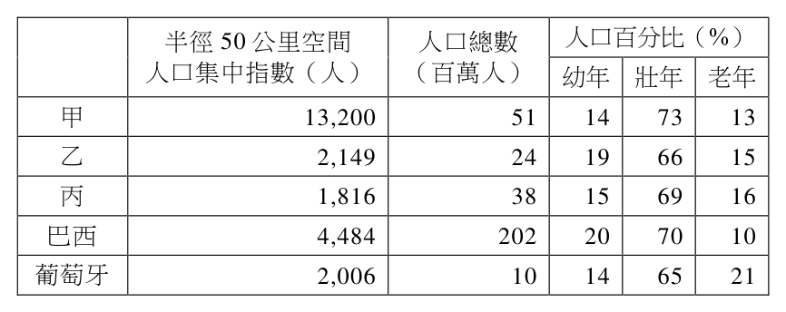
（A） 波蘭、澳洲、韓國（B） 韓國、波蘭、澳洲（C） 澳洲、波蘭、韓國（D） 韓國、澳洲、波蘭答案：（D）
詳解與考點 正解：表2可先用人口總數辨識國家，再以年齡結構與集中指數交叉檢核。甲有人口51百萬人、幼年14%、壯年73%、老年13%，符合韓國；乙有人口24百萬人且集中指數最低，符合幅員廣大、人口分散的澳洲；丙有人口38百萬人，符合波蘭。因此甲、乙、丙依序為韓國、澳洲、波蘭，故選 D。
A：此組合把甲判為波蘭、丙判為韓國，與兩國人口總數51百萬人和38百萬人的對照不符。
B：此組合把乙判為波蘭、丙判為澳洲。澳洲約24百萬人的人口總數與最低的空間人口集中指數，正是乙的組合特徵。
C：此組合把甲判為澳洲、丙判為韓國。韓國人口高度集中且人口約51百萬人，兩項線索皆應對到甲。
本題考點：人口集中指數（population concentration index）——在其他條件相近時，人口越集中於少數地區，近距離共居人口越多；人口總數（total population）——國別判讀可先以量級篩選，再以年齡結構複核；人口分布（population distribution）——幅員廣大、人口稀疏的國家通常集中指數較低。
第 33 題
巴西曾為葡萄牙最大的海外殖民地,2015 年時巴西的人口密度約為葡萄牙的五分之一,
但表2 的資料顯示其空間人口集中指數卻是葡萄牙的兩倍多,此與其殖民地都市發展歷程
有關。哪個地理概念最適合用來解釋此現象?請以10 字內說明(2 分)。
本題選項為上圖中的 A／B／C／D，請對照圖片作答。
標準答案未收錄
詳解與考點 正解：可在10字內寫「殖民地都市化」。殖民時期港口與沿海都市較早發展，人口集中於少數都市與沿海帶；國土遼闊的內陸人口較稀疏，因此全國人口密度雖低，空間人口集中指數仍可能較高。故可作答「殖民地都市化」。
本題考點：殖民地都市化（colonial urbanization）——港口與行政據點先發展時，人口容易集中於沿海都市，內陸則較稀疏；尺度效應（scale effect）——比較全國人口密度與半徑50公里的共居人口時，量測尺度不同，不能直接互推。
第 34 題
請將表2 中「巴西」的人口年齡結構,以答題卷上之圓點作答示例()繪製於作答區的
三角圖上(3 分)。
請記得在答題卷簽名欄位以正楷簽全名共 11 頁 地理考科
本題選項為上圖中的 A／B／C／D，請對照圖片作答。
標準答案未收錄
詳解與考點 正解：表2中巴西的幼年、壯年、老年人口百分比分別為20%、70%、10%。先核對20%+70%+10%=100%，再依三角圖各軸的百分比刻度，標出幼年20%、壯年70%、老年10%三條等值線的交會點，故應在該交會點繪製圓點。
本題考點：人口年齡結構（population age structure）——幼年、壯年、老年三類百分比須合計100%；三角圖（ternary diagram）——三個百分比的交會位置同時表示三類結構，作圖前先核對總和；資料轉譯（data translation）——將表格比例轉為圖上座標時，每一軸都要保留原始百分比。
「15 分鐘生活圈」是一個 甲 乙 丙
都市規劃與發展的理想概念,
希望讓社區居民在步行15 分鐘
可及的範圍內,滿足大部分
日常生活所需的服務。圖8 為
甲、乙、丙三個都市街區的
生活資源分布圖,其比例尺 15 分鐘步行距離 日常生活消費設施 學校與托育中心
大小一致,地圖下方實線符號
公園及居民休閒設施
長度代表居民15 分鐘的步行
圖8
距離。請問:
第 35 題
某生欲利用服務區分析(或稱節點服務範圍)功能,找出都市內某地步行15 分鐘的可及
範圍,其在操作步驟中輸入下列哪個道路屬性,可直接產出分析結果?
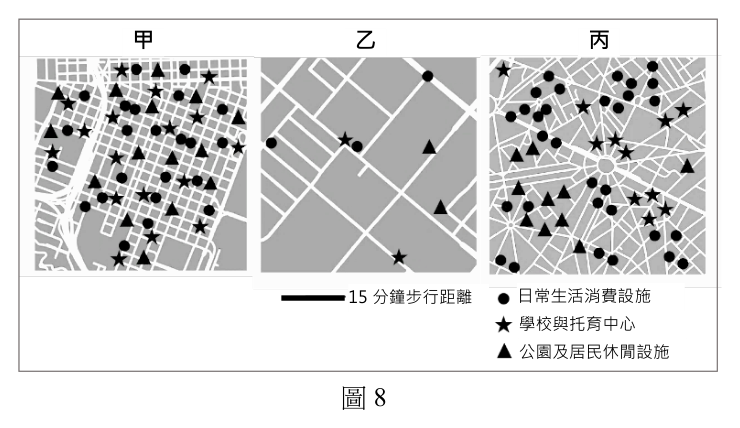
（A） 道路寬度（B） 道路長度（C） 平均高度（D） 通過時間答案：（D）
詳解與考點 正解：服務區分析要找的是「步行 15 分鐘」能到達的範圍，網路分析必須把每段道路轉成可累加的阻抗值。若道路屬性直接提供通過時間，就能沿道路網累計時間並畫出 15 分鐘等時服務範圍，故選 D。
A：道路寬度可能影響通行舒適或容量，但不能直接加總成步行時間。
B：道路長度只給距離；除非另有步行速度或時間換算規則，不能直接產出 15 分鐘可及範圍。
C：平均高度與道路網上的步行時間沒有直接對應，不能作為本題服務區分析的阻抗值。
本題考點：服務區分析（service area analysis）——設定「幾分鐘可到」時，選擇可沿網路累加的通過時間作為阻抗；可及性（accessibility）——距離、時間與成本都可作為阻抗，但題目問時間門檻時不可只用距離替代。
第 36 題
根據題文和圖8,哪個都市最符合「15 分鐘生活圈」的規劃與發展概念?請在答題卷作答區
中勾選最符合的都市,並以20 字內從服務設施空間分布特色的角度說明判斷依據(4 分)。
本題選項為上圖中的 A／B／C／D，請對照圖片作答。
標準答案未收錄
詳解與考點 正解：15分鐘生活圈的判準是居民步行15分鐘內，能同時取得日常消費、學校或托育、休閒公園等多類服務。應勾選三類設施分散配置於住宅周邊、使多數住戶可及的都市；理由可寫「三類設施分散配置，多數住戶步行15分鐘內可及」。故應勾選符合此條件者。實際名稱仍須以圖8的設施符號與步行尺度逐一比對。
本題考點：15分鐘生活圈（15-minute city）——判斷時看單一住戶步行範圍內是否涵蓋多種日常服務；可及性（accessibility）——設施總數多不等於可及性高，關鍵在空間分布是否接近居民；設施均衡配置（equitable facility distribution）——各類服務分散到不同街區，才能減少居民的可及落差。
義大利某都市海岸侵蝕嚴重,當地政府為此委託專家進行海岸管理計畫。專家們首先 43.31°N
判斷沿岸流的方向以瞭解該市
海岸侵蝕的機制,接著訪問
漁業、旅遊業、環保組織、
公民等權益關係人,將他們的
訴求與建議帶回,之後建立各項
海岸管理指標,再以網路地圖的
方式呈現指標資訊,作為規劃 13.73°E
海岸管理計畫使用,並提供民眾
查詢,圖9 是該市海岸的局部衛
星影像圖。某生以此案例進行公
眾參與式地理資訊系統 圖9
(PPGIS)的專題報告。請問:
第 37 題
老師認為該生所引用的案例並未完全符合PPGIS 的理念,其理由最可能是因為該計畫進行
的過程,缺乏下列何種行動?
（A） 研究人員使用GIS整合海岸土地利用資料（B） 宣導民眾透過GIS網站查詢海岸地區風險（C） 以GIS為平臺與權益關係人討論管理計畫（D） 政府以GIS網站公開海岸地區景觀分區圖答案：（C）
詳解與考點 正解：題幹中的「訪問權益關係人，將訴求與建議帶回」只做到蒐集意見；PPGIS 的核心還要讓利害關係人能在 GIS 平臺上共同討論並影響規劃。把資訊上網供查詢是單向公開，不能取代協作決策，故選 C。
A：研究人員整合海岸土地利用資料可作為分析基礎，卻不是題幹顯示缺少的環節；PPGIS 並不排斥專家整理資料。
B：題組已說明網路地圖提供民眾查詢，因此這種資訊取用已經出現。它看似有民眾參與，但沒有讓民眾與規劃者共同形成方案。
D：公開景觀分區圖也是資訊透明的做法，與題組的網路地圖相符；分辨關鍵在公開後是否有回饋、討論與決策影響。
本題考點：公眾參與式地理資訊系統（Public Participation GIS，PPGIS）——判斷是否符合時，要看民眾是否能藉地理資訊進入討論與決策，不只看資料是否上網；權益關係人（stakeholders）——把意見帶回是諮詢，能與不同群體共同協商才是實質參與；參與階梯（participation ladder）——區分告知、諮詢與共決時，判準是參與者對方案的影響程度。
第 38 題
在答題卷作答區中勾選此區沿岸流的主要方向,並根據圖9 中港口附近的地貌景觀,
以30 字內說明文中專家判斷此區沿岸流方向的依據與海岸侵蝕的機制(5 分)。
請記得在答題卷簽名欄位以正楷簽全名
本題選項為上圖中的 A／B／C／D，請對照圖片作答。
標準答案未收錄
詳解與考點 正解：沿岸流方向可由港口兩側漂砂堆積與侵蝕的不對稱判讀。沿岸流會把砂由上游側搬運至下游側；港口阻擋漂砂後，上游側較易堆積，下游側補砂不足而侵蝕。可寫「港口上游側堆砂、下游側缺砂侵蝕；沿岸流由堆積側流向缺砂側」，故在圖上勾選此方向。實際箭頭方向須依圖9兩側地貌判讀。
本題考點：沿岸流（longshore current）——波浪斜向入射時會沿岸搬運砂礫，方向可由漂砂跡象判讀；港口突堤效應（groin effect）——構造物攔截漂砂，常造成一側堆積、另一側缺砂；海岸侵蝕（coastal erosion）——下游側補砂量不足時，波浪持續帶走砂料而使岸線後退。
某生欲以人口活動強度來進行地理課題的探究,他從文獻分析中發現第三級產業活動 興盛區,主要為零售百貨業或服務業等產業所聚集,具有地價高和易達性高的特色,由於 這些區域提供許多就業機會,吸引鄰近人口跨區通勤來此工作。該生因此想探討北臺灣 (北北基桃)每日淨通勤人數較多的區域,是否即為第三級產業活動興盛區。 為了探究這個課題,他從國土資訊系統社會經濟資料服務平台中,下載以鄉鎮區為 統計單元的「電信信令人口統計」GIS 資料,該資料是以手機使用人口的位置,推估各個 鄉鎮區的人口活動數量,表3 為該資料的部分屬性資料表。該生利用GIS 的屬性分析功能 計算出各鄉鎮區的每日淨通勤人數估計值後,將研究成果繪製成圖10。
該生從圖10 的資訊發現,臺北市淨通勤人數較多的區域,的確與第三級產業活動 興盛區高度重疊。請問:
表3
平日夜間 平日日間 假日夜間 假日日間
行政區
停留人數 活動人數 停留人數 活動人數
甲區 577,007 461,811 574,620 552,865 乙區 426,580 343,466 424,259 395,318 工業區
火車站
百貨公司
淨通勤人數大於1萬人
臺北市 基隆市
桃園市
新北市
圖10
第 39 題
根據題文,該生最可能從下列哪個地理概念進行研究發問?
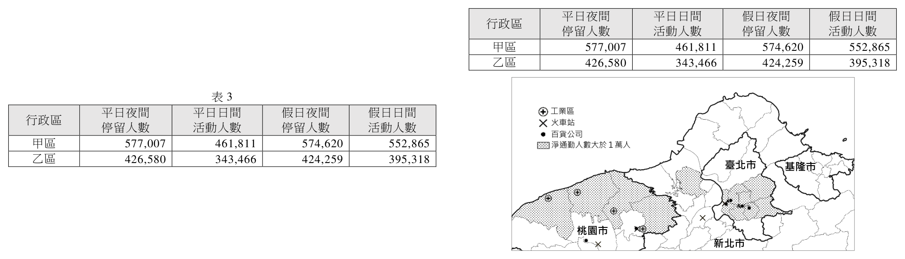
（A） 交通革新（B） 競租理論（C） 時空收斂（D） 城鄉關係答案：（D）
詳解與考點 正解：材料先指出臺北市第三級產業集中、提供就業，再以「鄰近人口跨區通勤」與「每日淨通勤」作為研究變項；這是在考察核心都市與周邊地區間的人口流動和功能連結，屬城鄉關係，故選 D。
A：交通革新著重新的運輸技術或路網如何改變移動條件。題文沒有比較交通工具或運輸技術的改變。
B：競租理論可用來解釋商業區地價高的現象，但本研究實際要檢驗的是淨通勤人口是否與第三級產業區重疊，不是比較不同土地使用者的租金競爭。
C：時空收斂指交通、通訊進步使相對距離或旅行時間縮短；題文沒有以不同時期的時間距離作為研究對象。
本題考點：城鄉關係（urban-rural relationship）——看到核心都市提供就業、周邊地區跨區通勤時，應由人口與功能流動判斷；淨通勤（net commuting）——以日間活動人口和夜間停留人口的差異估計區域吸納或輸出就業人口的程度；地理研究發問——先辨認材料中的主要變項與其關係，再選擇能同時涵蓋兩者的概念。
第 40 題
根據題文,該生以GIS 的屬性資料分析方法,從表3 計算各區每日淨通勤人數的估計值,
下列何者最可能是其使用的操作步驟?
（A） 平日夜間停留人數的欄位數值加上平日日間活動人數的欄位數值（B） 平日日間活動人數的欄位數值減去平日夜間停留人數的欄位數值（C） 假日日間活動人數的欄位數值加上假日夜間停留人數的欄位數值（D） 假日日間活動人數的欄位數值減去平日日間活動人數的欄位數值答案：（B）
詳解與考點 正解：題目要估計的是平日因通勤而增加或減少的人口，夜間停留人數可近似居住基數，日間活動人數則包含通勤後的活動人口，所以應以平日日間活動人數減去平日夜間停留人數。以表3為例，甲區為461,811-577,007=-115,196人，乙區為343,466-426,580=-83,114人；正負值呈現日間相對居住基數的人口變化，故選 B。
A：兩欄相加得到的是兩個人口量的總和，不是日間相對夜間的淨變化，無法代表淨通勤。
C：假日資料反映休閒、消費等活動，未對準題幹所問的每日通勤；而且相加同樣不是淨值。
D：假日日間減平日日間比較的是不同日別的活動差異，不能估計平日夜間居民移入或移出的通勤量。
本題考點：淨通勤（net commuting）——以日間活動人口減夜間停留人口估計，正值表示日間增加、負值表示日間減少；GIS屬性分析（GIS attribute analysis）——先選對欄位，再以相減建立新欄位；人口活動資料（mobile-phone mobility data）——資料代表推估的人口位置，解讀時要區分平日與假日。
第 41 題
老師審視該生的研究結果,發現缺乏桃園市的分析與推論,要求他補齊。如果你是該生,
根據題文與圖10 的資訊,從桃園市淨通勤人數大於1 萬人區域內的產業類別,推論臺北
市的研究結果在桃園市是否成立?請在答題卷作答區中勾選,並以40 字內陳述判斷的
理由(4 分)。
請記得在答題卷簽名欄位以正楷簽全名共 11 頁 地理考科
本題選項為上圖中的 A／B／C／D，請對照圖片作答。
標準答案未收錄
詳解與考點 正解：應勾選「不成立」。以圖10的產業符號比對後，桃園市淨通勤人數大於1萬人的區域主要可用工業區解釋；工業屬第二級產業，並非臺北市所指的零售百貨與服務業等第三級產業。可寫「高淨通勤區多為工業區，屬第二級產業，非第三級服務業」，故臺北市的推論不能直接套用到桃園市。
本題考點：產業部門（economic sectors）——工業為第二級產業，零售百貨與多數服務業為第三級產業；空間疊圖判讀（spatial overlay interpretation）——比較高淨通勤區與產業符號是否重疊，再提出推論；研究結果外推（generalization）——一個城市成立的空間關係，須在另一城市另行檢驗。
閱讀以下資料:
資料一:2024 年全球前兩大太陽能發電國家的優勢條件
一、中國 二、美國
中國憑藉政策補貼與完整供應鏈, 美國在太陽能發電容量上處於領先 處於全球太陽能板製造的主導地位, 地位,大片土地日照時間充足,陽光帶 主要將產品出口到歐洲與北美等地區。 等州見證了太陽能的大規模擴張。 資料二:2025 年美國總統川普上任後不久即揮舞關稅大刀,擬對許多國家收取高額 關稅,尤其對中國的關稅稅率特別高,可能引發全球貿易減速。氣候與產業 專家認為,全球貿易減速可能讓碳排放短暫下降,但長期恐不利於美國能源 轉型與綠色科技。請問:
第 42 題
根據題文,圖中何處最可能是美國發展太陽能光電的州別?
丙
乙
甲
丁
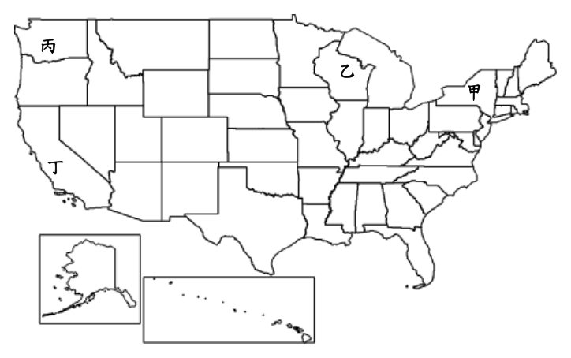
（A） 甲（B） 乙（C） 丙（D） 丁答案：（D）
詳解與考點 正解：資料一的美國條件是大片土地、日照時間充足與陽光帶州的大規模擴張，因此要找的是美國西南部等日照資源豐富地帶；圖中該州別標為丁，故選 D。
A：甲未同時符合大片土地與陽光帶日照充足的組合。太陽能區位不能只按國土位置概略判斷。
B：乙不是資料一所指的主要陽光帶區位。判別重點是可長期利用的日照條件與可布設設施的土地。
C：丙亦不對應題幹描述的太陽能擴張帶。能源設施的區位須回到日照與土地兩項條件。
本題考點：太陽能光電（solar photovoltaics）——日照充足且土地較充裕時，較適合大規模布設；陽光帶（Sun Belt）——美國南部與西南部多州具有較佳日照條件；能源區位（energy location）——自然資源條件與可用土地需同時考量。
第 43 題
資料二中氣候與產業專家就美國對中國提高關稅政策後,對全球貿易減速之影響提出的
兩個觀點,僅根據資料一作為其觀點的佐證,在答題卷作答區中,各以30 字內寫出
其可能所持的佐證說明(6 分)。
本題選項為上圖中的 A／B／C／D，請對照圖片作答。
標準答案未收錄
詳解與考點 正解：兩個觀點要各自扣回資料一的供應鏈資訊。短期排放的佐證可寫「中國太陽能板出口北美，貿易減速減少生產與運輸排放」；長期轉型的佐證可寫「中國主導太陽能板供應，關稅增加美國擴建成本」。前句說明貿易量下降可能帶來短暫排放下降，後句說明設備供應受阻會不利美國太陽能擴張，故可分別作答。
本題考點：全球供應鏈（global supply chain）——製造優勢國的出口受阻，會影響進口國的設備取得與成本；關稅（tariff）——提高進口成本可能改變跨國交易與投資；能源轉型（energy transition）——短期貿易或排放變化，不能等同於長期綠能設備擴張。
其他年度
回到分科測驗地理的年度總覽 ，
或到分科測驗題庫首頁 看其他科目。
題目與標準答案出自大考中心 分科測驗歷年試題（依著作權法 §9，考試試題不受著作權保護）。依中華民國《著作權法》第 9 條第 1 項第 5 款，
依法令舉行之各類考試試題不得為著作權之標的，得自由利用。詳解為 AI 整理的學習輔助，
並非官方標準答案 ；中華民國會修訂，引用前請對照現行版本查證。